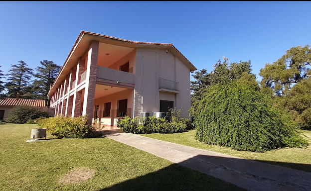

¿Como se dan?
los talleres son dados de forma presencial y son actividades practica que sirven
Los talleres de nivel uno son dados en un total de 3(tres) dias, se ingresa los dias viernes y se sale los dias domingos.
Los talleres de nivel avanzados por lo generel se dan entre 3(tres) a 4(cuatro) dias, ingresando los dias jueves/viernes y saliendo los domingos.
Que se necesita
Se va a necesitar ropa cómoda, ropa de cama, juego de sabanas, elementos de higiene, tallón.
No es necesario llevar cuadernos y lapicera, Todos los elementos a usar en las actividades serán dados por nosotros.
Calendario
Del 17 al 19 de Marzo 2022
Ubicacion
Manos Abiertas - Casa de Retiro Santa Isabel de Hungría
Estamos ubicados en alta gracia- Provincia de cordoba
Ubicacion: Manos Abiertas - Casa de Retiro Santa Isabel de Hungría